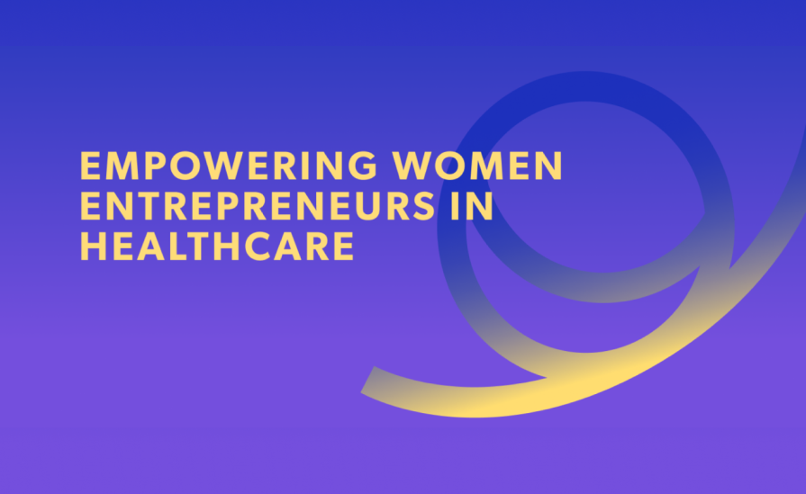
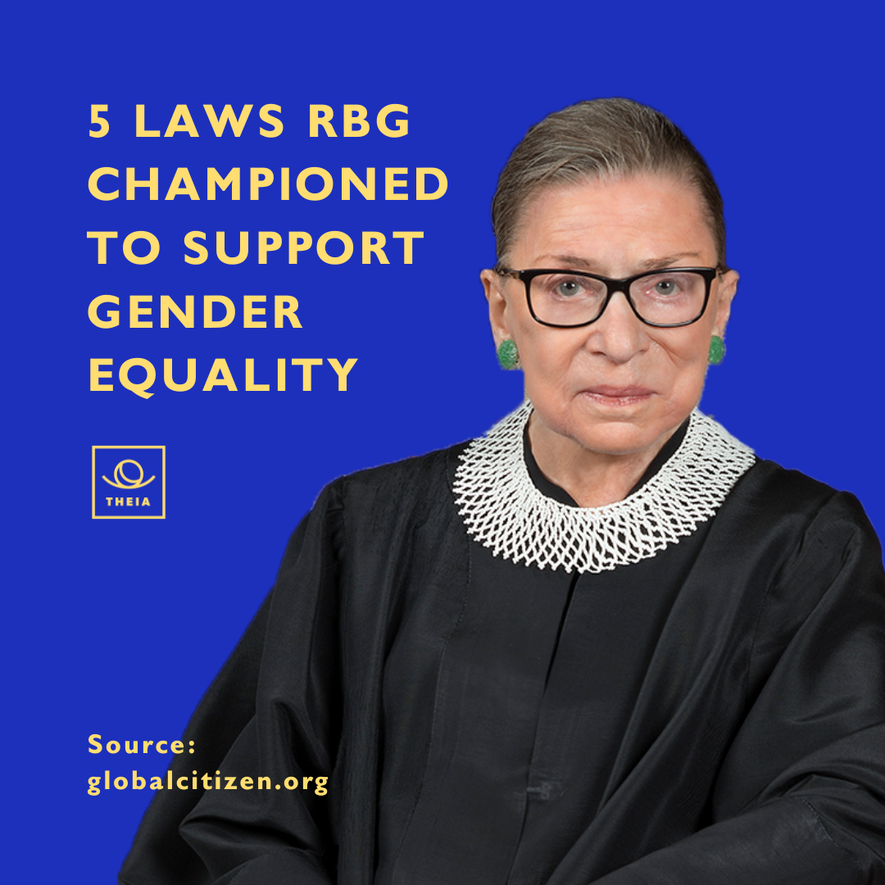
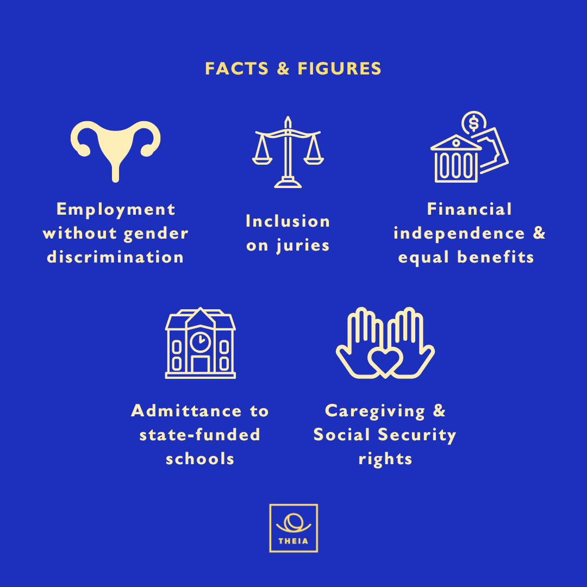
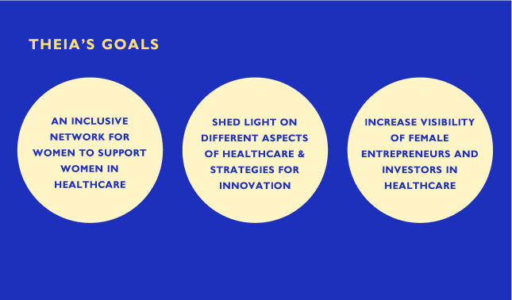
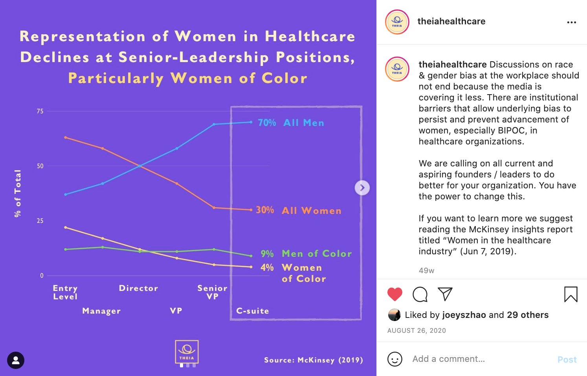

Theia is a nonprofit dedicated to inspiring and empowering the next generation of women entrepreneurs and investors in healthcare — an industry with significant innovation opportunities yet persistent leadership underrepresentation. The work focused on building community, increasing visibility of female leaders, and creating supportive networks.

Theia Health Ventures needed a brand identity and website that could serve as both a community hub and a resource platform — connecting aspiring women entrepreneurs and investors in the healthcare sector with the leaders, stories, and tools they needed.
As a 2-person team, I co-led the design of the visual identity, website, and social media graphics across a full year of development and iteration.


The pandemic accelerated reliance on digital channels, making community signup and sustained social media engagement the two core goals. The platform had to feel both aspirational and accessible — inspiring to senior leaders while welcoming to early-career women discovering the space.

The design work addressed four distinct functional areas of the platform:
Persistent updates and calls-to-action surfaced the podcast on every scroll — making content discovery passive rather than effortful.
Mechanisms for nominating leaders and linking to Medium articles kept the community layer active and user-generated.
Resources organized through moon phase imagery — a navigational metaphor that framed career stages as cycles rather than linear ladders.
"Read More" functionality for team members balanced personality with professionalism without overwhelming the primary content.

The website launched live at theiahc.org. The year-long project reinforced key lessons in scalable design implementation, mobile-first considerations, long-term thinking across a growing platform, and the importance of the designer-developer relationship in shipping real products.